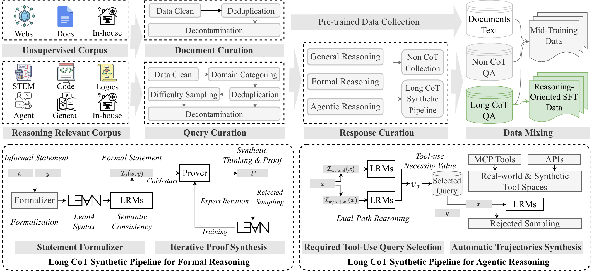
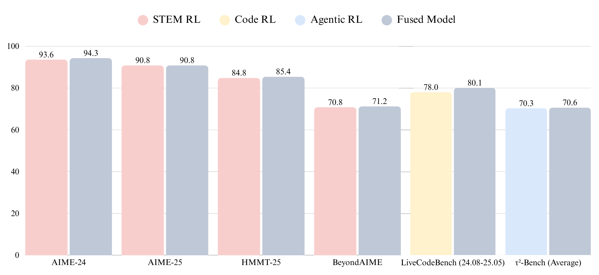
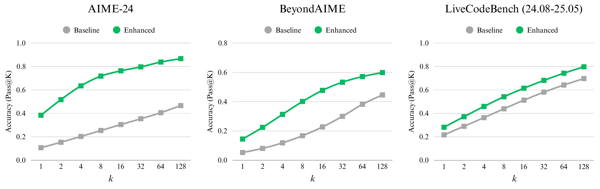

1
Motivation: From Non-Thinking Base to Reasoning Model
LongCat-Flash (560B/27B MoE) offers a hardware-friendly, high-throughput base, but three concrete gaps limit its reasoning ceiling: (1) long-CoT patterns are scarce — pre-training corpora contain almost no explicit reasoning traces, so vanilla SFT+RL only yields shallow, homogeneous reasoning; (2) large-scale MoE RL is unstable — synchronous training stalls on the longest output, asynchronous setups suffer dual drift from staleness + numerical gap; (3) negative transfer in mixed-domain RL — STEM / Code / Agentic length distributions differ wildly (Figure domain_train_length_dis), causing severe per-batch distribution shift when mixed.

Figure: cold-start data pipelinesrc/assets/cold_start_data_pipeline.png '">
Figure 1: Cold-Start data pipeline (mid-training → reasoning SFT)
Cold-Start Step 1: Mid-Training Reasoning Enhancement
Increase reasoning-intensive data ratio on the Flash 560B base. Ablation shows +27.7% pass@1 on AIME-24, with strong amplification at pass@64/128 — proving mid-training truly widens the reasoning boundary, leaving headroom for downstream RL.
Cold-Start Step 2: Reasoning-Oriented SFT
Three independent pipelines: (a) general-reasoning rejection sampling; (b) Lean4 ATP expert iteration (the source of MiniF2F 67.6 pass@1); (c) dual-path agentic selection with $v_x = s_{\text{w/. tool}}(x) - s_{\text{w/o. tool}}(x) > \tau$, filtering out "false-need" queries.
Step ① Statement Formalization
An 8B autoformalizer translates natural-language problems into Lean4 statements; a two-stage filter (syntax + semantic) keeps both compilation and meaning clean.
Step ② Cold-Start Prover Training
Model-based synthesis fills in thinking for each (statement, proof) → (statement, thinking, proof) triple for SFT.
Step ③ Expert Iteration
The current prover attacks unsolved statements → newly proven ones enter the dataset → thinking is re-synthesized → prover is retrained, in a fixed-round self-improvement loop.
2
Domain-Parallel RL + DORA Async System
Mixed-domain RL is especially unstable under async MoE: per-batch distribution shift compounds with policy staleness. This paper's core methodological contribution is a three-step "domain-decompose → fuse → general RL" pipeline, paired with DORA async rollout that lets a 560B MoE absorb nearly 20% of pre-training compute in RL.
Domain-Parallel: Three Independent RL Experts
STEM (64K, curriculum) / Code (48K→56K→64K progressive) / Agentic (48K, structured tool-call format reward) are trained as three independent experts; each domain has its own query curation (STEM drops multi-part, Code standardizes test cases, Agentic focuses on "must-use-tool" problems).
Model Fusion: TIES + DARE + SCE
For each expert compute task vector $\tau_i = \theta^i_{\text{RL}} - \theta_{\text{SFT}}$, then fuse in three steps: (1) Normalization balances domain contributions; (2) DARE dropout prunes redundant parameters; (3) SCE erase removes minority-direction updates. The single fused model lands near the Pareto frontier.
General RL: Prevent Capability Regression
After fusion, run one more round of general RL on creative writing / instruction following / safety data, to prevent fusion-induced regressions in general capability or safety.

Figure: fused model nears Pareto-optimal on all three expert domainssrc/assets/fused_model_result.png '">
Figure 2: Fused-model results across the three expert-domain benchmarks
DORA — Dynamic ORchestration for Asynchronous Rollout
Two device groups (Standalone Generator + Elastic Role) + Streaming Rollout + multi-version actor (staleness=2 demo) + Elastic Colocation + PD disaggregation. >3× speedup over sync training, plus 1.5× rollout speedup (host-side kernel launch optimization). RL compute spend reaches ~20% of pre-training on tens of thousands of accelerators.
| Reward Model | Accuracy | vs. Rule |
|---|
| Rule-based | 80.9% | baseline |
| Non-Reasoning GenRM | 94.0% | +13.1 |
| Reasoning GenRM (Ours) | 98.8% | +17.9 |
3
Experiments: Reasoning SOTA + Token Efficiency
Under a 27B-activated budget, LongCat-Flash-Thinking reaches open-source SOTA in math / code / agent / formal proving / safety. Three standout open-source leads: MiniF2F formal proving (full sweep), abstract reasoning on Sudoku-Bench / ARC-AGI, and three of four safety sub-categories ranked #1.

Figure: mid-training reasoning boundary — pass@k improves across AIME-24 / BeyondAIME / LCBsrc/assets/reasoning_boundary.png '">
Figure 3: Reasoning Boundary — mid-training widens reasoning to pass@128
Figure 4: LongCat-Flash-Thinking full benchmark overview (vs. DS-V3.1 / Qwen3-235B / GLM-4.5)
Figure 5: Agentic token efficiency — AIME-25 tool use drops tokens 19,653 → 6,965 (−64.5%)
① Domain-Parallel
STEM / Code / Agentic are trained as independent RL experts, sidestepping mixed-domain negative transfer. After fusion a single model lands near Pareto-optimal — train N experts, deploy 1.
② DORA Async
Streaming Rollout + multi-version actor + Elastic Colocation. 3× speedup vs. sync training, running on tens of thousands of accelerators with RL compute ≈20% of pre-training.
③ Cold-Start Key
Mid-training reasoning enhance (AIME-24 pass@1 +27.7%) + Lean4 ATP expert iteration (MiniF2F +18pp) + dual-path agentic selection. Cold-start sets the RL ceiling.
④ Token-Efficient CoT
An agentic system doesn't have to think longer — offloading reasoning to tools is cheaper. AIME-25 tokens −64.5%, accuracy preserved.